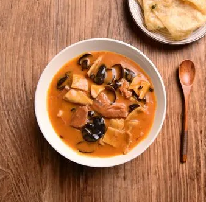
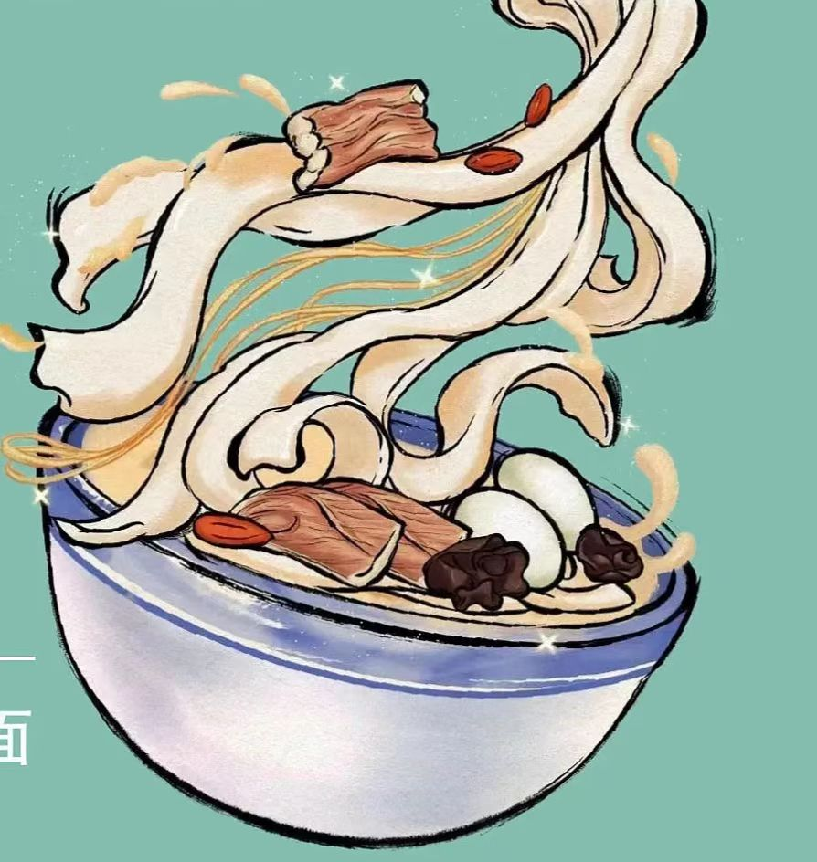
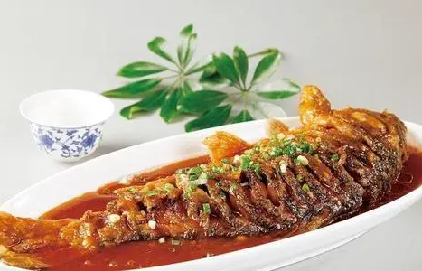
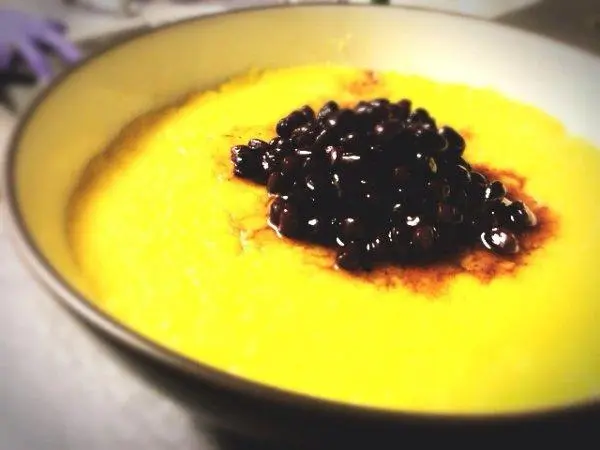
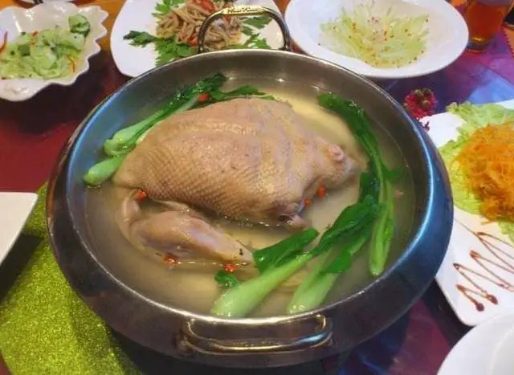
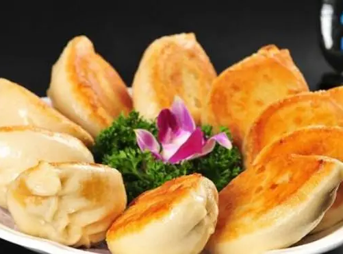

胡辣汤：要说河南美食，我可是当之无愧的第一名！爷的汤味浓郁、汤色靓丽、汤汁粘稠、香辣可口，是河南人早餐必备。麻辣鲜香，营养开胃。而且我的历史非常悠久，自唐代就有爷的传说，一度成为社会潮流。除此之外，爷还有舒肝醒脾、有益行气的功效。尔等小辈怎敢与爷争峰。

831

烩面：吾看汤兄口气如此之大，还真是见识短浅的鼠辈之人。吾有一年千又三百多之年岁，自汉朝既有之，及位列于中国十大面条之一，是荤、素、汤、菜、饭兼而有之的河南传统美食。以味道鲜美、经济实惠享誉中原。话已至此，想必大家也都认可吾为状元吧。
654
黄河大鲤鱼：看各位兄台竞争如此之激烈，敝鱼倒也来争上一争，敝鱼自古就有“己食鱼，必河之鲤”，“洛鲤伊鲂,贵如牛羊”之说。何为食之上品，敝鱼的肉质鲜美、金鳞赤尾、体形梭长、形态优美，驰名中外。几百年前白居易等许多诗人都为敝鱼作诗，况且，赦鱼在民间也流传广泛，可谓是深得民心。这位冠之首，敝鱼也当是实至名归

653

大家好，我是“三不沾”，又名“桂花蛋”，是汉族传统名点之一。你们可能对我不是很熟悉。我先介绍一下我的名字吧、“三不沾”即为“不粘盘子，不粘筷，不粘牙齿”，我的用料很简单只有蛋黄和绿豆粉。但想吃到我却是一点不容易，因为想制作我得综合施用“晃勺、炒，拍，揿”等多种手法，一气炒400到500下才出勺。最后的我形圆、菜面油光反亮、呈蛋黄色、质感细腻、入口韧而有动、糯而不散，吃完之后满口香甜，实为佳品，真乃上上者。
536
俺是河南开封的地方传统名肴“套四宝”，堪为豫菜一绝、俺绝就绝在集鸡，鸭、鸽、鹌鹑之浓、香、鲜、野于一体，四只全禽层层相套。个个通体完整，无一根骨头。俺的色泽光亮、醇香扑鼻、不肥不腻、清爽可口、回味绵长。俺的制作工艺也十分讲究，尤其是剔骨，剔骨后，个个原形不变，虽有的地方皮薄如纸，但仍充水不漏，真乃陈家名菜，俺觉得俺也有资格来当第一

544

姐姐我呢是“水煎包”。我呢制作工艺简单，不如前几位复杂，但我们比的也不是制作工艺。姐是用钢板平锅煎制而成的，状扁大、上下呈金黄色、外酥里鲜、口感甚传、清香宜人，而且物美价廉全国各地都有曼妙的身影。我们都是给人吃的，像姐这样能到全国各地都有分身的，才真正称行上第一！
789